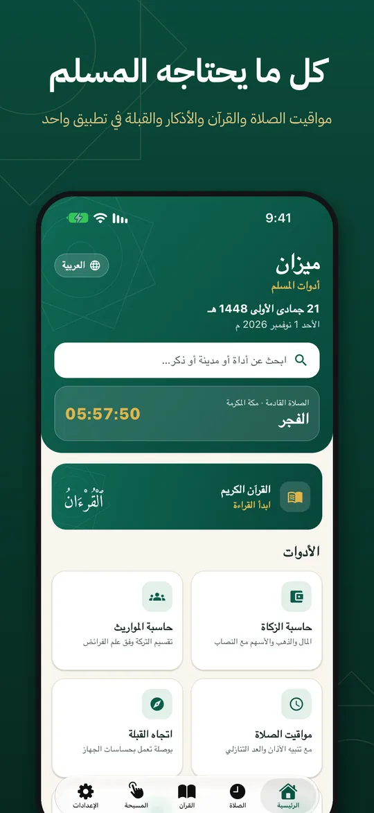
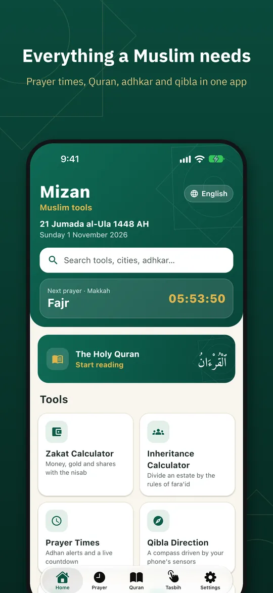

حاسبات شرعية مجانية وتطبيق للمسلم
الزكاة والمواريث ومواقيت الصلاة والتاريخ الهجري، تُحسب على جهازك دون تسجيل، ومع كل نتيجة قاعدتها ودليلها الشرعي.
10 أدوات على الويب، و15 لغة، ولا يُرسل أي رقم إلى خادم.
عشر أدوات شرعية على الويب. كلها مجانية وبلا حساب.
حاسبة الزكاة
2.5%حاسبة المواريث
الفرائضزكاة الفطر
صاع · 2.04 كغمواقيت الصلاة
6 أوقاتالفدية والكفارة
مُدّاتجاه القبلة
درجةمحوّل التاريخ الهجري
أم القرىحاسبة العمر
هـ / مالمناسبات الإسلامية
أيامالمسبحة الإلكترونية
33 · 100محوّل التاريخ
تقويم أم القرىكل نتيجة ومعها دليلها
قواعد الحساب على المعتمد عند جمهور الفقهاء. تحت كل نتيجة الآية أو الحديث الذي بُنيت عليه، ومواضع الخلاف إن وُجدت، لتعرف كيف وصلت الحاسبة إلى الرقم.
حاسبة المواريث تُظهر من حُجب. ولا تُخفيه.
تقسم التركة على الفروض والتعصيب، وتعرض أصل المسألة ونصيب كل وارث بالكسر والمبلغ. الوارث المحجوب يبقى في القائمة مشطوبًا، ومعه سبب حجبه.
جرّب حاسبة المواريثقسمة التركة
أصل المسألة 24 · التركة 240,000دليل نصيب الزوجة﴿فَإِن كَانَ لَكُمْ وَلَدٌ فَلَهُنَّ الثُّمُنُ مِمَّا تَرَكْتُم﴾ سورة النساء، الآية 12
مواقيت الصلاة على خط اليوم. والصلاة القادمة مضاءة.
تطبيق ميزان للهاتف. يعمل دون إنترنت وبلا إعلانات.
المصحف بالرسم العثماني مع التفسير والتلاوة، و334 ذكرًا بمصدرها ودرجتها، وتنبيهات الأذان، و5 ودجات للشاشة الرئيسية.
ميزان بخمس عشرة لغة. الواجهة والأدلة والترجمات.
- العربية
- English
- Français
- Türkçe
- اردو
- Bahasa Indonesia
- Bahasa Melayu
- فارسی
- বাংলা
- Русский
- Deutsch
- Español
- Українська
- Oʻzbekcha
- Қазақша
الحساب على جهازك
أرقامك وموقعك لا تغادر هاتفك أو حاسوبك.
بلا حساب أو اشتراك
كل الأدوات تفتح مباشرة، دون تسجيل دخول.
يعمل دون اتصال
ثبّت الموقع على هاتفك واستخدمه دون شبكة.

